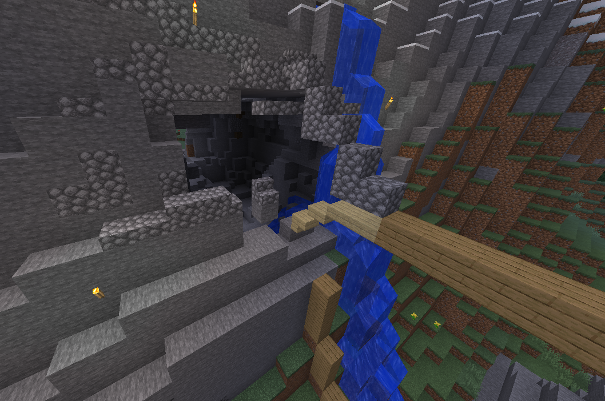

News
Here will be the detailed news of the server on what's happening recently.
Here will be the detailed news of the server on what's happening recently.
In a bold move to strengthen their forces against their long-standing rival, FIGTRUM, the MAFIA and KRISBEATER clans merged under the MAFIA banner. This alliance marked the beginning of an all-out war for dominance. On the early hours of Day 122, three of MAFIA’s most formidable warriors—Maotzedun26, AetherWafer, and PROMETHEUS_0017—launched a devastating assault on one of FIGTRUM’s key bases. With precision and ruthless efficiency, they stormed the stronghold, looting everything of value before setting the base ablaze. Within hours, 80% of the fortress was reduced to ash, leaving FIGTRUM’s forces scattered and stripped of their most valuable resources. The attack was nothing short of catastrophic for FIGTRUM. Humiliated and outmatched, they had no choice but to surrender to MAFIA’s dominance, signing the Treaty of MAFIA-FIGTRUMs—a bitter testament to their crushing defeat. This battle marked a turning point in the war, proving that MAFIA’s reign was far from over.


Still seething from past betrayals, PROMETHEUS_0017 swore vengeance—and he wasted no time in making good on his promise. Teaming up with AetherWafer, he tracked down Maotzedun26’s hidden stronghold at coordinates 1549, 100, -700, a location once thought to be impenetrable. The assault was swift and merciless. With a barrage of TNT charges, they reduced the base to ruins, obliterating the meticulously crafted storage system and laying waste to the automated farms. What was once a thriving operation was now nothing more than smoldering debris, a testament to the price of betrayal. This act of destruction sent shockwaves through the battlefield, proving that in this war, no fortress was truly safe.


March 14, 2025—The war between the MAFIA Clan and its former allies took a dramatic and deadly turn. In a calculated act of vengeance, the notorious MAFIA leader, Maotzedun26, orchestrated the assassination of PROMETHEUS_0017 in one of the most cold-blooded betrayals of the conflict. Luring his target to what appeared to be a hidden stronghold, Maotzedun26 had rigged the entire base with exactly 36 TNT, strategically placed beneath the floorboards. Unaware of the impending trap, PROMETHEUS_0017 followed his former ally inside. With an eerie calm, Maotzedun26 led him to a button discreetly positioned next to a painting and, in a chilling moment of deception, uttered the now-infamous words: "Now, let's stare at this painting." Before PROMETHEUS_0017 could react, Maotzedun26 pressed the button. A deafening explosion erupted as the TNT ignited in a chain reaction, engulfing the base in fire and debris. Within seconds, the structure was obliterated—along with PROMETHEUS_0017. The assassination sent shockwaves through the war-torn battlefield, proving once again that in the world of MAFIA, trust is nothing more than a death sentence.
